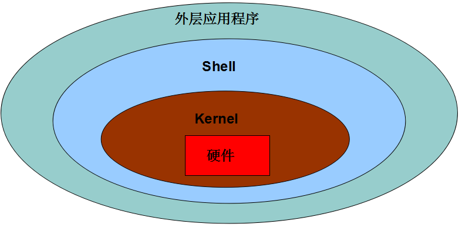

并发编程
| Tedu Python 教学部 |
|---|
| Author：吕泽 |
并发编程多任务编程进程（process）进程理论基础基于fork的多进程编程fork使用进程相关函数孤儿和僵尸群聊聊天室 multiprocessing 模块创建进程进程创建方法自定义进程类进程池实现进程间通信（IPC）管道通信(Pipe)消息队列共享内存信号量（信号灯集）线程编程（Thread）线程基本概念threading模块创建线程线程对象属性自定义线程类同步互斥线程间通信方法线程同步互斥方法线程Event线程锁 Lock死锁及其处理python线程GIL进程线程的区别联系区别联系使用场景要求并发网络通信模型常见网络模型基于fork的多进程网络并发模型实现步骤基于threading的多线程网络并发实现步骤ftp 文件服务器IO并发IO 分类阻塞IO 非阻塞IOIO多路复用select 方法poll方法epoll方法协程技术基础概念第三方协程模HTTPServer v2.0
多任务编程
- 意义： 充分利用计算机CPU的多核资源，同时处理多个应用程序任务，以此提高程序的运行效率。
- 实现方案 ：多进程 ， 多线程
进程（process）
进程理论基础
- 定义 ： 程序在计算机中的一次运行。
- 程序是一个可执行的文件，是静态的占有磁盘。
- 进程是一个动态的过程描述，占有计算机运行资源，有一定的生命周期。
- 系统中如何产生一个进程 【1】 用户空间通过调用程序接口或者命令发起请求 【2】 操作系统接收用户请求，开始创建进程 【3】 操作系统调配计算机资源，确定进程状态等 【4】 操作系统将创建的进程提供给用户使用

- 进程基本概念
cpu时间片：如果一个进程占有cpu内核则称这个进程在cpu时间片上。
PCB(进程控制块)：在内存中开辟的一块空间，用于存放进程的基本信息，也用于系统查找识别进程。
进程ID（PID）： 系统为每个进程分配的一个大于0的整数，作为进程ID。每个进程ID不重复。
Linux查看进程ID ： ps -aux
父子进程 ： 系统中每一个进程(除了系统初始化进程)都有唯一的父进程，可以有0个或多个子进程。父子进程关系便于进程管理。
查看进程树： pstree
进程状态
- 三态
就绪态 ： 进程具备执行条件，等待分配cpu资源 运行态 ： 进程占有cpu时间片正在运行 等待态 ： 进程暂时停止运行，让出cpu
- 三态

- 五态 (在三态基础上增加新建和终止) 新建 ： 创建一个进程，获取资源的过程 终止 ： 进程结束，释放资源的过程

- 状态查看命令 ： ps -aux --> STAT列
S 等待态 R 执行态 Z 僵尸
+前台进程 l 有多线程的
- 进程的运行特征 【1】 多进程可以更充分使用计算机多核资源 【2】 进程之间的运行互不影响，各自独立 【3】 每个进程拥有独立的空间，各自使用自己空间资源
面试要求
- 什么是进程，进程和程序有什么区别
- 进程有哪些状态，状态之间如何转化
基于fork的多进程编程
fork使用
代码示例：day7/fork.py

x"""fork.py fork进程创建演示"""import osfrom time import sleep# 创建子进程pid = os.fork()if pid < 0:print("Create process failed")elif pid == 0:# 只有子进程执行sleep(3)print("The new process")else:# 只有父进程执行sleep(4)print("The old process")# 父子进程都执行print("process test over")
代码示例：day7/fork1.py*

xxxxxxxxxx"""fork1.py fork进程演示细节"""import osfrom time import sleepprint("=========================")a = 1def fun():print("fun .... ")pid = os.fork()if pid < 0:print("Create process failed")elif pid == 0:print("Child process")print("a = ",a) # 从父进程空间拷贝了变量fun()a = 10000 # 只是修改了自己空间的aelse:sleep(1)print("Parent process")print("a:",a)print("All a ->",a)
pid = os.fork() 功能： 创建新的进程 返回值：整数，如果创建进程失败返回一个负数，如果成功则在原有进程中返回新进程的PID，在新进程中返回0
注意
- 子进程会复制父进程全部内存空间，从fork下一句开始执行。
- 父子进程各自独立运行，运行顺序不一定。
- 利用父子进程fork返回值的区别，配合if结构让父子进程执行不同的内容几乎是固定搭配。
- 父子进程有各自特有特征比如PID PCB 命令集等。
- 父进程fork之前开辟的空间子进程同样拥有，父子进程对各自空间的操作不会相互影响。
进程相关函数
代码示例：day7/get_pid.py
xxxxxxxxxx"""获取进程PID号"""import osfrom time import sleeppid = os.fork()if pid < 0:print("Error")elif pid == 0:sleep(1)print("Child PID:",os.getpid()) # 自己pidprint("Get parent PID:",os.getppid()) # 父pidelse:print("Parent PID:", os.getpid()) # 自己pidprint("Get child PID:",pid)
代码示例：day7/exit.py
xxxxxxxxxx"""进程退出演示"""import os,syspid = os.fork()# 父子进程退出不会影响对方继续执行if pid < 0:print("Error")elif pid == 0:# os._exit(0) # 子进程退出print("Child process")else:sys.exit("退出父进程")print("Parent process")
os.getpid() 功能： 获取一个进程的PID值 返回值： 返回当前进程的PID
os.getppid() 功能： 获取父进程的PID号 返回值： 返回父进程PID
os._exit(status) 功能: 结束一个进程 参数：进程的终止状态
sys.exit([status]) 功能：退出进程 参数：整数 表示退出状态 字符串 表示退出时打印内容
孤儿和僵尸
- 孤儿进程 ： 父进程先于子进程退出，此时子进程成为孤儿进程。
特点： 孤儿进程会被系统进程收养，此时系统进程就会成为孤儿进程新的父进程，孤儿进程退出该进程会自动处理。
- 僵尸进程 ： 子进程先于父进程退出，父进程又没有处理子进程的退出状态，此时子进程就会称为僵尸进程。
特点： 僵尸进程虽然结束，但是会存留部分PCB在内存中，大量的僵尸进程会浪费系统的内存资源。
- 如何避免僵尸进程产生
- 使用wait函数处理子进程退出
代码示例：day7/wait.py
xxxxxxxxxx"""模拟僵尸进程产生"""import os,sysimport signal# 忽略子进程的退出行为，子进程退出自动由系统处理signal.signal(signal.SIGCHLD,signal.SIG_IGN)pid = os.fork()if pid < 0:print("Error")elif pid == 0:print("Child PID:",os.getpid())sys.exit(2)else:"""os.wait() 处理僵尸"""# pid,status = os.wait()# print("pid:",pid)# print('status:',os.WEXITSTATUS(status))while True: # 让父进程不退出pass
xxxxxxxxxx```pid,status = os.wait()功能：在父进程中阻塞等待处理子进程退出返回值： pid 退出的子进程的PIDstatus 子进程退出状态```
创建二级子进程处理僵尸

代码示例：day7/child.py
xxxxxxxxxx"""创建二级子进程处理僵尸"""import osfrom time import sleepdef f1():for i in range(3):sleep(2)print("写代码")def f2():for i in range(2):sleep(4)print("测代码")pid = os.fork()if pid == 0:p = os.fork() # 创建二级子进程if p == 0:f1()else:os._exit(0) # 一级子进程退出else:os.wait() # 等待回收一级子进程f2()【1】 父进程创建子进程，等待回收子进程 【2】 子进程创建二级子进程然后退出 【3】 二级子进程称为孤儿，和原来父进程一同执行事件
通过信号处理子进程退出
原理： 子进程退出时会发送信号给父进程，如果父进程忽略子进程信号，则系统就会自动处理子进程退出。
方法： 使用signal模块在父进程创建子进程前写如下语句 ：
xxxxxxxxxximport signalsignal.signal(signal.SIGCHLD,signal.SIG_IGN)特点 ： 非阻塞，不会影响父进程运行。可以处理所有子进程退出
群聊聊天室
功能 ： 类似qq群功能 【1】 有人进入聊天室需要输入姓名，姓名不能重复 【2】 有人进入聊天室时，其他人会收到通知：xxx 进入了聊天室 【3】 一个人发消息，其他人会收到：xxx ： xxxxxxxxxxx 【4】 有人退出聊天室，则其他人也会收到通知:xxx退出了聊天室 【5】 扩展功能：服务器可以向所有用户发送公告:管理员消息： xxxxxxxxx
聊天室程序思路：
需求分析 ： 达到什么样的目的，形成什么样的运行流程
- 启动软件--> 输入姓名-->进入-->聊天（收发随意）-> 退出 | | ---不允许进入
技术点的确定
消息发送流程： client-->server->client
网络选择 ： udp 进行数据传输
存储内容： name address {name:address,} [(name,address),]
消息收发互不影响
使用多进程，让消息发送接收各占一个进程
结构和注意事项
- 采用什么结构封装 ： 函数
- 编写一个功能，测试一个功能
- 注释
功能模块分析
网络搭建 客户端 ： udp客户端 服务端 ： udp服务端
进入聊天室 客户端 ： * 输入姓名 * 向服务器发送请求 * 接收结果 * 允许则进入聊天，不允许则重写输入姓名
服务器 ： * 接受请求，区分请求类型 * 判断用户是否存在 * 如果允许进入，将其加入存储结构 * 通知其他用户，告知本人可以登录 * 如果不允许则结束，告知用户不可以进入
聊天 客户端 ： * 创建新的进程 * 一个进程循环的发送消息 * 一个进程循环的接收消息
服务端 ： * 接收请求，判断请求类型 * 将消息转发给其他用户 xxx : xxxxxxxxx
退出聊天室 客户端 ： * 输入quit 或者 ctrl-c退出 * 发送请求给服务端 * 结束进程 服务端 ： * 接收请求，判断请求类型 * 将退出消息发送给其他人 * 将用户从字典删除
管理员消息
协议设定
请求格式： 登录 ： L name 聊天 ： C name text 退出 ： Q name
响应格式： 登录 ： 成功（OK） 失败（失败原因） 退出 ： 给客户端发送 EXIT 让客户端接收进程退出
xxxxxxxxxx"""chat room 客户端发送请求，展示结果"""from socket import *import os,sys# 服务器地址ADDR = ('127.0.0.1',8888)# 进入聊天室def login(s):while True:try:name = input("请输入昵称:")if not name:continueexcept KeyboardInterrupt:sys.exit("谢谢使用")msg = "L " + names.sendto(msg.encode(),ADDR)# 接收反馈结果data,addr = s.recvfrom(128)if data.decode() == 'OK':print("您已进入聊天室")return nameelse:print(data.decode())# 子进程函数def send_msg(s,name):while True:try:text = input("头像:")except KeyboardInterrupt:text = 'quit'# 退出聊天室if text.strip() == 'quit':msg = "Q " + names.sendto(msg.encode(),ADDR)sys.exit('退出聊天室')msg = "C %s %s"%(name,text)s.sendto(msg.encode(),ADDR)def recv_msg(s):while True:data,addr = s.recvfrom(2048)# 接收进程退出if data.decode() == 'EXIT':sys.exit()print(data.decode()+'\n头像:',end='')# 客户端启动函数def main():s = socket(AF_INET,SOCK_DGRAM)name = login(s) # 请求进入聊天室# 创建新的进程pid = os.fork()if pid < 0:print("Error!!")returnelif pid == 0:send_msg(s,name) # 子进程发送消息else:recv_msg(s) # 父进程接收消息main()
xxxxxxxxxx"""chat roomenv: python3.6socket udp & fork"""from socket import *import os,sys# 服务端地址ADDR = ('0.0.0.0',8888)# 存储用户的结构 {name:address}user = {}# 处理登录def do_login(s,name,addr):if name in user or '管理员' in name:s.sendto("该用户存在".encode(),addr)return# 加入用户msg = "\n欢迎 %s 进入聊天室"%namefor i in user:s.sendto(msg.encode(),user[i])user[name] = addrs.sendto(b'OK',addr)# 聊天def do_chat(s,name,text):msg = "\n%s: %s"%(name,text)for i in user:# 刨除本人if i != name:s.sendto(msg.encode(),user[i])# 退出def do_quit(s,name):msg = "\n%s 退出聊天室"%namefor i in user:if i != name: # 其他人s.sendto(msg.encode(),user[i])else:s.sendto(b'EXIT',user[i])del user[name] # 删除该用户# 接受请求，分发给不同方法处理def do_request(s):while True:# 循环接收来自客户端请求data,addr = s.recvfrom(1024)tmp = data.decode().split(' ',2)# 根据不同的请求类型分发函数处理# L 进入 C 聊天 Q退出if tmp[0] == 'L':do_login(s,tmp[1],addr)elif tmp[0] == 'C':do_chat(s,tmp[1],tmp[2])elif tmp[0] == 'Q':if tmp[1] in user:do_quit(s, tmp[1])# 搭建网络def main():# udp服务端s = socket(AF_INET,SOCK_DGRAM)s.bind(ADDR)# 开辟新的进程处理管理员消息pid = os.fork()if pid == 0:# 子进程处理管理员消息while True:msg = input("管理员消息:")msg = "C 管理员 " + msgs.sendto(msg.encode(),ADDR)else:do_request(s) # 处理客户端请求main()
multiprocessing 模块创建进程
进程创建方法
代码示例：day8/process1.py
xxxxxxxxxx"""Process 创建进程演示1. 编写进程函数2. 生成进程对象3. 启动进程4. 回收进程"""import multiprocessing as mpfrom time import sleepa = 1# 进程执行函数def fun():print("开始一个进程")sleep(2)global aprint("a = ",a)a = 10000print("子进程结束")# 创建进程对象p = mp.Process(target=fun)# 启动进程p.start()# 父进程执行事件sleep(3)print("父进程干点事")# 回收进程p.join()print("a:",a)"""pid = os.fork()if pid == 0:fun()os._exit()else:os.wait()"""print("======================")
代码示例：day8/process2.py
xxxxxxxxxx"""创建多个子进程"""from multiprocessing import Processfrom time import sleepimport osdef th1():sleep(3)print("吃饭")print(os.getppid(),'--',os.getpid())def th2():sleep(2)print("睡觉")print(os.getppid(),'--',os.getpid())def th3():sleep(4)print("打豆豆")print(os.getppid(),'--',os.getpid())things = [th1,th2,th3]jobs = []for th in things:p = Process(target=th)jobs.append(p) # 对进程对象进行存储p.start()# [i.join() for i in jobs]# 一起回收for i in jobs:i.join()
代码示例：day8/process3.py
xxxxxxxxxx"""Process 给进程函数传参"""from multiprocessing import Processfrom time import sleep# 含有参数的进程函数def worker(sec,name):for i in range(3):sleep(sec)print("I'm %s"%name)print("I'm working...")# 通过args 给函数位置传参# p = Process(target=worker,args=(2,'Levi'))p = Process(target=worker,args=(2,),kwargs={'name':'Baron'})p.start()p.join()
- 流程特点 【1】 将需要子进程执行的事件封装为函数 【2】 通过模块的Process类创建进程对象，关联函数 【3】 可以通过进程对象设置进程信息及属性 【4】 通过进程对象调用start启动进程 【5】 通过进程对象调用join回收进程
- 基本接口使用
xxxxxxxxxxProcess()功能 ： 创建进程对象参数 ： target 绑定要执行的目标函数 args 元组，用于给target函数位置传参 kwargs 字典，给target函数键值传参xxxxxxxxxxp.start()功能 ： 启动进程注意:启动进程此时target绑定函数开始执行，该函数作为子进程执行内容，此时进程真正被创建
xxxxxxxxxxp.join([timeout])功能：阻塞等待回收进程参数：超时时间注意
- 使用multiprocessing创建进程同样是子进程复制父进程空间代码段，父子进程运行互不影响。
- 子进程只运行target绑定的函数部分，其余内容均是父进程执行内容。
- multiprocessing中父进程往往只用来创建子进程回收子进程，具体事件由子进程完成。
- multiprocessing创建的子进程中无法使用标准输入
- 进程对象属性
代码示例：day8/process_attr.py
xxxxxxxxxx"""进程对象属性"""from multiprocessing import Processimport timedef tm():for i in range(3):print(time.ctime())time.sleep(2)p = Process(target = tm,name = 'Tarena')# 父进程退出，其所有子进程也退出p.daemon = Truep.start() # 进程真正产生print("Name:",p.name) # 进程名print("PID：",p.pid) # pid号print("is alive:",p.is_alive()) # 是否在生命周期
p.name 进程名称
p.pid 对应子进程的PID号
p.is_alive() 查看子进程是否在生命周期
p.daemon 设置父子进程的退出关系
- 如果设置为True则子进程会随父进程的退出而结束
- 要求必须在start()前设置
- 如果daemon设置成True 通常就不会使用 join()
自定义进程类
代码示例：day8/myProcess.py
xxxxxxxxxx"""自定义进程类"""from multiprocessing import Processfrom time import *# 自定义进程类class MyProcess(Process):def __init__(self,value):self.value = valuesuper().__init__() # 加载父类initdef f1(self):print("步骤1")def f2(self):print("步骤2")# 作为流程启动函数def run(self):for i in range(self.value):self.f1()self.f2()if __name__ == '__main__':p = MyProcess(2)p.start()p.join()
- 创建步骤
【1】 继承Process类
【2】 重写
__init__方法添加自己的属性，使用super()加载父类属性 【3】 重写run()方法 - 使用方法 【1】 实例化对象 【2】 调用start自动执行run方法 【3】 调用join回收线程
练习： 求100000以内所有的质数之和， 请分别使用单进程，4进程，10进程完成，然后记录每次 完成的时间
求和，使用sum()函数即可 记录时间使用装饰器即可
xxxxxxxxxximport timedef timeit(func):def wrapper(*args,**kwargs):start_time = time.time()res = func(*args,**kwargs)end_time = time.time()print("%s函数运行时间：%.6f"%(func.__name__,end_time-start_time))return resreturn wrapper
xxxxxxxxxxfrom multiprocessing import Processfrom timeit import timeit# 判断一个数是否为质数def isPrime(n):if n <= 1:return Falsefor i in range(2,n):# 除了1和其本身出现了能被整除的数if n % i == 0:return Falsereturn True# 单进程完成任务@timeitdef no_multi_process():prime = []for i in range(1,100001):if isPrime(i):prime.append(i)sum(prime)# 自定义进程类class Prime(Process):def __init__(self,prime,begin,end):self.prime = primeself.begin = begin # 取值的开始self.end = end # 取值的末尾super().__init__()def run(self):for i in range(self.begin,self.end):if isPrime(i):self.prime.append(i)sum(self.prime)@timeitdef use_4_process():prime = []jobs = []for i in range(1,100001,25000):p = Prime(prime,i,i+25000)jobs.append(p)p.start()[i.join() for i in jobs]@timeitdef use_10_process():prime = []jobs = []for i in range(1,100001,10000):p = Prime(prime,i,i+10000)jobs.append(p)p.start()[i.join() for i in jobs]if __name__ == '__main__':# no_multi_process()# use_4_process()use_10_process()
xxxxxxxxxx"""用两个子进程分别拷贝图片的上半部分和下半部分"""from multiprocessing import Processimport osfilename = "./timg.jpg"size = os.path.getsize(filename)# 所有进程使用的是同一个IO，相互有影响# fr = open(filename,'rb')# print(fr.fileno())# 复制上半部分def top():fr = open(filename,'rb')print(fr.fileno())fw = open('top.jpg','wb')n = size//2fw.write(fr.read(n))fr.close()fw.close()# 下半部分def bot():fr = open(filename, 'rb')print(fr.fileno())fw = open('bot.jpg', 'wb')fr.seek(size//2,0)fw.write(fr.read())fr.close()fw.close()p1 = Process(target=top)p2 = Process(target=bot)p2.start()p1.start()p1.join()p2.join()
进程池实现
代码示例：day8/pool.py

xxxxxxxxxx"""pool.py进程池 使用实例"""from multiprocessing import Poolfrom time import sleep,ctime# 进程池事件def worker(msg):sleep(2)print(ctime(),'--',msg)# 创建进程池pool = Pool(4)# 向进程池队列中添加事件for i in range(10):msg = "Tedu %d"%ipool.apply_async(func=worker,args=(msg,))# 关闭进程池pool.close()# 回收进程池pool.join()
- 必要性 【1】 进程的创建和销毁过程消耗的资源较多 【2】 当任务量众多，每个任务在很短时间内完成时，需要频繁的创建和销毁进程。此时对计算机压力较大 【3】 进程池技术很好的解决了以上问题。
- 原理
创建一定数量的进程来处理事件，事件处理完进 程不退出而是继续处理其他事件，直到所有事件全都处理完毕统一销毁。增加进程的重复利用，降低资源消耗。
- 进程池实现
【1】 创建进程池对象，放入适当的进程
xxxxxxxxxxfrom multiprocessing import PoolPool(processes)功能： 创建进程池对象参数： 指定进程数量，默认根据系统自动判定【2】 将事件加入进程池队列执行
xxxxxxxxxxpool.apply_async(func,args,kwds)功能: 使用进程池执行 func事件参数： func 事件函数 args 元组 给func按位置传参 kwds 字典 给func按照键值传参返回值： 返回函数事件对象【3】 关闭进程池
xxxxxxxxxxpool.close()功能： 关闭进程池【4】 回收进程池中进程
xxxxxxxxxxpool.join()功能： 回收进程池中进程
进程间通信（IPC）
- 必要性： 进程间空间独立，资源不共享，此时在需要进程间数据传输时就需要特定的手段进行数据通信。
- 常用进程间通信方法
管道 消息队列 共享内存 信号 信号量 套接字
管道通信(Pipe)
代码示例：day9/pipe.py
xxxxxxxxxx"""pipe.py 管道操作注意： 1. multiprocessing中提供的通信只用于亲缘关系进程间通信2. 管道在父进程中创建，子进程从父进程中获取管道对象"""from multiprocessing import Process,Pipe# 创建管道对象# 参数False 表示fd1 只能 recv , fd2 只能 sendfd1,fd2 = Pipe()# APP1可以使用app2提供的信息登录def app1():print("启动app1，请登录")print("请求app2授权")# 写管道fd1.send("app1 可以用你的账号登录吗？")data = fd1.recv()if data:print("登录成功：",data)def app2():request = fd2.recv() # 阻塞等待读取管道print(request)fd2.send(('Joy','123')) # 发送python数据类型p1 = Process(target=app1)p2 = Process(target=app2)p1.start()p2.start()p1.join()p2.join()
- 通信原理
在内存中开辟管道空间，生成管道操作对象，多个进程使用同一个管道对象进行读写即可实现通信
- 实现方法
xxxxxxxxxxfrom multiprocessing import Pipefd1,fd2 = Pipe(duplex = True)功能: 创建管道参数：默认表示双向管道如果为False 表示单向管道返回值：表示管道两端的读写对象 如果是双向管道均可读写 如果是单向管道fd1只读 fd2只写fd.recv()功能 ： 从管道获取内容返回值：获取到的数据fd.send(data)功能： 向管道写入内容参数： 要写入的数据消息队列
代码示例：day9/queue_0.py
xxxxxxxxxx"""消息队列演示注意： 消息存入与去除关系为 先入先出"""from multiprocessing import Queue,Processfrom time import sleepfrom random import randint# 创建队列q = Queue(5) # 最大存储5个消息def request():for i in range(10):x = randint(1,100)y = randint(1,100)q.put((x,y)) # 写消息队列print("=============")def handle():while not q.empty():data = q.get() # 读消息队列print("x + y = ",data[0]+data[1])sleep(2)p1 = Process(target=request)p2 = Process(target=handle)p1.start()p2.start()p1.join()p2.join()
1.通信原理
在内存中建立队列模型，进程通过队列将消息存入，或者从队列取出完成进程间通信。
- 实现方法
xxxxxxxxxxfrom multiprocessing import Queueq = Queue(maxsize=0)功能: 创建队列对象参数：最多存放消息个数返回值：队列对象q.put(data,[block,timeout])功能：向队列存入消息参数：data 要存入的内容block 设置是否阻塞 False为非阻塞timeout 超时检测q.get([block,timeout])功能：从队列取出消息参数：block 设置是否阻塞 False为非阻塞timeout 超时检测返回值： 返回获取到的内容q.full() 判断队列是否为满q.empty() 判断队列是否为空q.qsize() 获取队列中消息个数q.close() 关闭队列共享内存
代码示例：day9/value.py
xxxxxxxxxx"""value.py 开辟共享内存空间注意： 共享内存中只能有一个值"""from multiprocessing import Process,Valueimport timeimport random# 创建共享内存money = Value('i',5000)def man():for i in range(30):time.sleep(0.2)# 修改共享内存money.value += random.randint(1,1000)def girl():for i in range(30):time.sleep(0.15)money.value -= random.randint(100,800)p1 = Process(target=man)p2 = Process(target=girl)p1.start()p2.start()p1.join()p2.join()print("一个月余额：",money.value) #读取共享内存
代码示例：day9/array.py
xxxxxxxxxx"""array.py共享内存中存放列表，字节串"""from multiprocessing import Process,Array# 创建共享内存，初始数据 [1,2,3,4]# shm = Array('i',[1,2,3,4])# shm = Array('i',4) # 开辟4个整形的列表空间shm = Array('c',b'hello')def fun():# 共享内存对象可以迭代for i in shm:print(i)shm[0] = b'H' # 修改共享内存p = Process(target=fun)p.start()p.join()for i in shm:print(i)print(shm.value) # 整体打印字节串
- 通信原理：在内中开辟一块空间，进程可以写入内容和读取内容完成通信，但是每次写入内容会覆盖之前内容。
- 实现方法

xxxxxxxxxxfrom multiprocessing import Value,Arrayobj = Value(ctype,data)功能 ： 开辟共享内存参数 ： ctype 表示共享内存空间类型 'i' 'f' 'c' data 共享内存空间初始数据返回值：共享内存对象obj.value 对该属性的修改查看即对共享内存读写obj = Array(ctype,data)功能： 开辟共享内存空间参数： ctype 表示共享内存数据类型 data 整数则表示开辟空间的大小，其他数据类型表示开辟空间存放的初始化数据返回值：共享内存对象Array共享内存读写： 通过遍历obj可以得到每个值，直接可以通过索引序号修改任意值。* 可以使用obj.value直接打印共享内存中的字节串信号量（信号灯集）
代码示例：day9/sem.py
xxxxxxxxxx"""sem.py 信号量演示注意: 信号量可以当做是一种资源，执行任务需要消耗信号量资源，这样可以控制进程执行行为"""from multiprocessing import Process,Semaphorefrom time import sleepimport os# 创建信号量资源sem = Semaphore(3)# 任务函数 (系统中最多能够同时运行三个该任务)def handle():sem.acquire() # 消耗一个信号量print("%s执行任务"%os.getpid())sleep(2)print("%s 拯救了宇宙"%os.getpid())sem.release() # 增加一个信号量jobs = []for i in range(10):p = Process(target = handle)jobs.append(p)p.start()for i in jobs:i.join()
- 通信原理
给定一个数量对多个进程可见。多个进程都可以操作该数量增减，并根据数量值决定自己的行为。
- 实现方法
xxxxxxxxxxfrom multiprocessing import Semaphoresem = Semaphore(num)功能 ： 创建信号量对象参数 ： 信号量的初始值返回值 ： 信号量对象sem.acquire() 将信号量减1 当信号量为0时阻塞sem.release() 将信号量加1sem.get_value() 获取信号量数量线程编程（Thread）
线程基本概念
- 什么是线程 【1】 线程被称为轻量级的进程 【2】 线程也可以使用计算机多核资源，是多任务编程方式 【3】 线程是系统分配内核的最小单元 【4】 线程可以理解为进程的分支任务
- 线程特征 【1】 一个进程中可以包含多个线程 【2】 线程也是一个运行行为，消耗计算机资源 【3】 一个进程中的所有线程共享这个进程的资源 【4】 多个线程之间的运行互不影响各自运行 【5】 线程的创建和销毁消耗资源远小于进程 【6】 各个线程也有自己的ID等特征
threading模块创建线程
代码示例：day9/thread1.py

xxxxxxxxxx"""thread1.py 线程基础使用步骤： 1. 创建线程对象2. 启动线程3. 回收线程"""import threadingfrom time import sleepimport osa = 1# 线程函数def music():global aprint("a = ",a)a = 10000for i in range(3):sleep(2)print(os.getpid(),"播放: 葫芦娃")# 线程对象t = threading.Thread(target = music)t.start() # 启动线程for i in range(4):sleep(1)print(os.getpid(),"播放: 黄河大合唱")t.join() # 回收线程print("===========================")print("a:",a)
代码示例：day9/thread2.py
xxxxxxxxxxfrom multiprocessing import Lockfrom threading import Threadfrom time import sleep, ctime# 加线程锁lock = Lock() # 创建锁对象# 含有参数的线程函数def fun(sec, name, time):with lock: # 上锁 (自带解锁功能)print("线程函数传参")sleep(sec)print("%s,%s传参完毕!"%(time,name))# 创建多个线程jobs = []for r in range(5):lock.acquire() # 上锁t = Thread(target = fun,args=(3,),kwargs={"name":"laber","time":ctime()})jobs.append(t) # 存储线程对象lock.release() # 解锁t.start() # 启动线程[i.join() for i in jobs] # 回收线程
【1】 创建线程对象
xxxxxxxxxxfrom threading import Threadt = Thread()功能：创建线程对象参数：target 绑定线程函数args 元组 给线程函数位置传参kwargs 字典 给线程函数键值传参
【2】 启动线程
xxxxxxxxxxt.start()
【3】 回收线程
xxxxxxxxxxt.join([timeout])
线程对象属性
代码示例：day9/thread_attr.py
xxxxxxxxxxfrom threading import Threadfrom time import sleepfrom threading import Locklock = Lock() #创建线程锁def play():for i in range(3):lock.acquire() # 上锁sleep(0.5)print("我要玩耍!")lock.release() # 解锁t = Thread(target = play)t.setDaemon(True) # Daemon与join只有一个出现 主线程退出分支线程也会跟着退出t.setName("Tutu") # 设置线程名称t.start()print("Name: ",t.getName()) # 线程名称print("is alive: ",t.is_alive()) # 线程是否在生命周期print("Deamon: ",t.isDaemon()) # 查看Deamon属性值# t.join() # 回收线程
t.name 线程名称 t.setName() 设置线程名称 t.getName() 获取线程名称
t.is_alive() 查看线程是否在生命周期
t.daemon 设置主线程和分支线程的退出关系 t.setDaemon() 设置daemon属性值 t.isDaemon() 查看daemon属性值
daemon为True时主线程退出分支线程也退出。要在start前设置，通常不和join一起使用。
自定义线程类
代码示例：day9/myThread.py
xxxxxxxxxxfrom threading import Threadfrom time import sleepclass MyThread(Thread):# __init__可以添加参数,进行编程def __init__(self, target, args = (), kwargs = {}):self.target = targetself.args = argsself.kwargs = kwargssuper().__init__() # 不许传参# 添加其他方法 rundef run(self):self.target(*self.args,**self.kwargs)print("\n" + "=" * 29 + "over" + "=" * 29)def music(count,sec,name):for i in range(count):print("播放音乐啦!^_^")sleep(sec)print("播放: %s"%name)if __name__ == '__main__':t = MyThread(target=music,args=(3,1),kwargs={"name":"see you again"})t.start()t.join()
xxxxxxxxxxfrom threading import Threadclass ThreadClass(Thread):def __init__(self, value):self.value = valuesuper().__init__() # 加载父类initdef f1(self):print("步骤1")def f2(self):print("步骤2")# 作为流程启动函数def run(self):for i in range(self.value):self.f1()self.f2()if __name__ == '__main__':t = ThreadClass(2)t.start()t.join()
- 创建步骤
【1】 继承Thread类
【2】 重写
__init__方法添加自己的属性，使用super()加载父类属性 【3】 重写run()方法 - 使用方法 【1】 实例化对象 【2】 调用start自动执行run方法 【3】 调用join回收线程
同步互斥
线程间通信方法
- 通信方法
线程间使用全局变量进行通信
- 共享资源争夺
- 共享资源：多个进程或者线程都可以操作的资源称为共享资源。对共享资源的操作代码段称为临界区。
- 影响 ： 对共享资源的无序操作可能会带来数据的混乱，或者操作错误。此时往往需要同步互斥机制协调操作顺序。
- 同步互斥机制
同步 ： 同步是一种协作关系，为完成操作，多进程或者线程间形成一种协调，按照必要的步骤有序执行操作。

互斥 ： 互斥是一种制约关系，当一个进程或者线程占有资源时会进行加锁处理，此时其他进程线程就无法操作该资源，直到解锁后才能操作。

线程同步互斥方法
线程Event
代码示例：day10/thread_event.py
xxxxxxxxxxfrom threading import Thread,Events = None # 全局变量e = Event() # 事件对象def yong():print("杨子荣前来拜上头")global ss = "天王盖地虎"e.set() # 修改完st = Thread(target=yong)t.setDaemon(True)t.start()e.wait(0.5) # 阻塞等待if s == "天王盖天虎":print("宝塔镇河妖")print("你是自己人.")else:print("打死他!!")
xxxxxxxxxxfrom threading import Evente = Event() 创建线程event对象e.wait([timeout]) 阻塞等待e被sete.set() 设置e，使wait结束阻塞e.clear() 使e回到未被设置状态e.is_set() 查看当前e是否被设置线程锁 Lock
代码示例：day10/thread_lock.py
xxxxxxxxxx"""thread_lock.py线程锁演示"""from threading import Thread,Locka = b = 0lock = Lock() # 锁对象def value():while True:lock.acquire() # 上锁操作if a != b:print('a = %d,b = %d'%(a,b))lock.release() # 解锁操作t = Thread(target=value)t.start()while True:with lock: # with上锁a += 1b += 1# 语句块结束解锁t.join()
xxxxxxxxxxfrom threading import Locklock = Lock() 创建锁对象lock.acquire() 上锁 如果lock已经上锁再调用会阻塞lock.release() 解锁with lock: 上锁...... with代码块结束自动解锁死锁及其处理
- 定义
死锁是指两个或两个以上的线程在执行过程中，由于竞争资源或者由于彼此通信而造成的一种阻塞的现象，若无外力作用，它们都将无法推进下去。此时称系统处于死锁状态或系统产生了死锁。

- 死锁产生条件
代码示例: day10/dead_lock.py
xxxxxxxxxx"""银行交易所"""from time import sleepfrom threading import Thread,Lock# 交易类class Account:def __init__(self,_id,balance,lock):self.id = _id # 谁self.balance = balance # 有多少钱self.lock = lock # 锁# 取钱def withdraw(self,amount):self.balance -= amount # 取多少# 存钱def deposit(self, amount):self.balance += amount# 查看余额def get_balance(self):return self.balance# 创建两个账户Tom = Account("Tom",10000,Lock())Jack = Account("Jack",6000,Lock())# 转账行为def transfer(from_,to_,amount):# 从 from_ --> to_ 转amountif from_.lock.acquire(): # 锁住自己的账户from_.withdraw(amount) # 自己账户扣除# sleep(3)if to_.lock.acquire(): # 对方账户上锁to_.deposit(amount) # 对方账户增加to_.lock.release() # 对方解锁from_.lock.release() # 自己解锁print("%s给%s转了%d元."%(from_.id,to_.id,amount))t1 = Thread(target=transfer,args=(Tom,Jack,5000))t2 = Thread(target=transfer,args=(Jack,Tom,200))t1.start()t2.start()t1.join()t2.join()print(Tom.get_balance())print(Jack.get_balance())
死锁发生的必要条件
- 互斥条件：指线程对所分配到的资源进行排它性使用，即在一段时间内某资源只由一个进程占用。如果此时还有其它进程请求资源，则请求者只能等待，直至占有资源的进程用毕释放。
- 请求和保持条件：指线程已经保持至少一个资源，但又提出了新的资源请求，而该资源已被其它进程占有，此时请求线程阻塞，但又对自己已获得的其它资源保持不放。
- 不剥夺条件：指线程已获得的资源，在未使用完之前，不能被剥夺，只能在使用完时由自己释放,通常CPU内存资源是可以被系统强行调配剥夺的。
- 环路等待条件：指在发生死锁时，必然存在一个线程——资源的环形链，即进程集合{T0，T1，T2，···，Tn}中的T0正在等待一个T1占用的资源；T1正在等待T2占用的资源，……，Tn正在等待已被T0占用的资源。
死锁的产生原因
简单来说造成死锁的原因可以概括成三句话：
- 当前线程拥有其他线程需要的资源
- 当前线程等待其他线程已拥有的资源
- 都不放弃自己拥有的资源
- 如何避免死锁
死锁是我们非常不愿意看到的一种现象，我们要尽可能避免死锁的情况发生。通过设置某些限制条件，去破坏产生死锁的四个必要条件中的一个或者几个，来预防发生死锁。预防死锁是一种较易实现的方法。但是由于所施加的限制条件往往太严格，可能会导致系统资源利用率。
python线程GIL
- python线程的GIL问题 （全局解释器锁）
什么是GIL ：由于python解释器设计中加入了解释器锁，导致python解释器同一时刻只能解释执行一个线程，大大降低了线程的执行效率。
导致后果： 因为遇到阻塞时线程会主动让出解释器，去解释其他线程。所以python多线程在执行多阻塞高延迟IO时可以提升程序效率，其他情况并不能对效率有所提升。
GIL问题建议
- 尽量使用进程完成无阻塞的并发行为
- 不使用c作为解释器 （Java C#）
- 结论 ： 在无阻塞状态下，多线程程序和单线程程序执行效率几乎差不多，甚至还不如单线程效率。但是多进程运行相同内容却可以有明显的效率提升。
进程线程的区别联系
区别联系
- 两者都是多任务编程方式，都能使用计算机多核资源
- 进程的创建删除消耗的计算机资源比线程多
- 进程空间独立，数据互不干扰，有专门通信方法；线程使用全局变量通信
- 一个进程可以有多个分支线程，两者有包含关系
- 多个线程共享进程资源，在共享资源操作时往往需要同步互斥处理
- 进程线程在系统中都有自己的特有属性标志，如ID,代码段，命令集等。
使用场景
- 任务场景：如果是相对独立的任务模块，可能使用多进程，如果是多个分支共同形成一个整体任务可能用多线程
- 项目结构：多种编程语言实现不同任务模块，可能是多进程，或者前后端分离应该各自为一个进程。
- 难易程度：通信难度，数据处理的复杂度来判断用进程间通信还是同步互斥方法。
要求
- 对进程线程怎么理解/说说进程线程的差异
- 进程间通信知道哪些，有什么特点
- 什么是同步互斥，你什么情况下使用，怎么用
- 给一个情形，说说用进程还是线程，为什么
- 问一些概念，僵尸进程的处理，GIL问题，进程状态
并发网络通信模型
常见网络模型
- 循环服务器模型 ：循环接收客户端请求，处理请求。同一时刻只能处理一个请求，处理完毕后再处理下一个。
优点：实现简单，占用资源少 缺点：无法同时处理多个客户端请求
适用情况：处理的任务可以很快完成，客户端无需长期占用服务端程序。udp比tcp更适合循环。
- 多进程/线程网络并发模型：每当一个客户端连接服务器，就创建一个新的进程/线程为该客户端服务，客户端退出时再销毁该进程/线程。
优点：能同时满足多个客户端长期占有服务端需求，可以处理各种请求。 缺点： 资源消耗较大
适用情况：客户端同时连接量较少，需要处理行为较复杂情况。
IO并发模型：利用IO多路复用,异步IO等技术，同时处理多个客户端IO请求。
优点 ： 资源消耗少，能同时高效处理多个IO行为 缺点 ： 只能处理并发产生的IO事件，无法处理cpu计算
适用情况：HTTP请求，网络传输等都是IO行为。
基于fork的多进程网络并发模型
代码实现: day10/fork_server.py
xxxxxxxxxx"""fork_server.py 基于fork的多进程并发重点代码创建监听套接字等待接收客户端请求客户端连接创建新的进程处理客户端请求原进程继续等待其他客户端连接如果客户端退出，则销毁对应的进程"""from socket import *import osimport signalADDR = ('0.0.0.0',8888)# 客户端处理函数,循环收发消息def handle(c):while True:data = c.recv(1024).decode()if not data:breakprint(data)c.send(b'OK')# 创建监听套接字s = socket()s.setsockopt(SOL_SOCKET,SO_REUSEADDR,1)s.bind(ADDR)s.listen(5)# 处理僵尸进程signal.signal(signal.SIGCHLD,signal.SIG_IGN)print("Listen the port 8888....")while True:# 循环等待客户端连接try:c,addr = s.accept()print("Connect from",addr)except KeyboardInterrupt:os._exit(0)except Exception as e:print(e)continue# 创建新的进程pid = os.fork()if pid == 0:# 子进程要处理具体的客户端请求s.close()handle(c) # 具体的处理请求函数os._exit(0) # 子进程处理请求后销毁else:c.close()
实现步骤
- 创建监听套接字
- 等待接收客户端请求
- 客户端连接创建新的进程处理客户端请求
- 原进程继续等待其他客户端连接
- 如果客户端退出，则销毁对应的进程
基于threading的多线程网络并发
代码实现: day10/thread_server.py
xxxxxxxxxx"""thread_server.py 基于Thread线程并非重点代码创建监听套接字循环接收客户端连接请求当有新的客户端连接创建线程处理客户端请求主线程继续等待其他客户端连接当客户端退出，则对应分支线程退出"""from socket import *from threading import Threadimport osADDR = ('0.0.0.0',8888)# 客户端处理函数,循环收发消息def handle(c):while True:data = c.recv(1024).decode()if not data:breakprint(data)c.send(b'OK')# 创建监听套接字s = socket()s.setsockopt(SOL_SOCKET,SO_REUSEADDR,1)s.bind(ADDR)s.listen(5)print("Listen the port 8888....")while True:# 循环等待客户端连接try:c,addr = s.accept()print("Connect from",addr)except KeyboardInterrupt:os._exit(0)except Exception as e:print(e)continue# 创建新的线程处理请求client = Thread(target=handle,args=(c,))client.setDaemon(True)client.start()
实现步骤
- 创建监听套接字
- 循环接收客户端连接请求
- 当有新的客户端连接创建线程处理客户端请求
- 主线程继续等待其他客户端连接
- 当客户端退出，则对应分支线程退出
ftp 文件服务器
代码实现: day11/ftp
ftp_server
xxxxxxxxxx"""ftp 文件服务器 ,服务端env: python 3.6多进程多线程并发 socket"""from socket import *from threading import Threadimport os,sysimport time# 全局变量HOST = '0.0.0.0'PORT = 8080ADDR = (HOST,PORT)FTP = "/home/tarena/FTP/" # 文件库路径# 功能类 (线程类)# 查文档, 下载,上传class FTPServer(Thread):def __init__(self,connfd):super().__init__()self.connfd = connfd# 处理文件列表def do_list(self):# 获取文件列表files = os.listdir(FTP)if not files:self.connfd.send("文件库为空".encode())returnelse:self.connfd.send(b'OK')time.sleep(0.1)# 拼接文件filelist = ''for file in files:filelist += file + '\n'self.connfd.send(filelist.encode())def do_get(self,filename):try:f = open(FTP+filename,'rb')except Exception:# 文件不存在self.connfd.send('文件不存在'.encode())returnelse:self.connfd.send(b'OK')time.sleep(0.1)# 发送文件while True:data = f.read(1024)if not data:time.sleep(0.1)self.connfd.send(b'##')breakself.connfd.send(data)def do_put(self,filename):if os.path.exists(FTP+filename):self.connfd.send("文件已存在".encode())returnelse:self.connfd.send(b'OK')# 接收文件f = open(FTP + filename,'wb')while True:data = self.connfd.recv(1024)if data == b'##':breakf.write(data)f.close()# 循环接受来自客户端的请求def run(self):while True:request=self.connfd.recv(1024).decode()if not request or request == 'Q':return # 线程退出elif request == 'L':self.do_list()elif request[0] == 'G':filename = request.split(' ')[-1]self.do_get(filename)elif request[0] == 'P':filename = request.split(' ')[-1]self.do_put(filename)# 启动函数def main():# 创建监听套接字s = socket()s.setsockopt(SOL_SOCKET, SO_REUSEADDR, 1)s.bind(ADDR)s.listen(5)print("Listen the port 8080....")while True:# 循环等待客户端连接try:c, addr = s.accept()print("Connect from", addr)except KeyboardInterrupt:os._exit(0)except Exception as e:print(e)continue# 创建新的线程处理请求client = FTPServer(c)client.setDaemon(True)client.start()main()
ftp_client
xxxxxxxxxx"""ftp 文件服务, 客户端"""import timefrom socket import *import sys# 服务器地址ADDR = ('127.0.0.1',8080)# 文件处理类class FTPClient:# 所有函数都使用sockfd,所以把它变为属性变量def __init__(self,sockfd):self.sockfd = sockfddef do_list(self):self.sockfd.send(b'L') # 发送请求# 等待回复 (服务端能否满足请求)data = self.sockfd.recv(128).decode()if data == 'OK':# 一次性接收所有文件data = self.sockfd.recv(4096)print(data.decode())else:print(data)def do_quit(self):self.sockfd.send(b'Q') # 退出请求self.sockfd.close()sys.exit("谢谢使用")def do_get(self,filename):# 发送请求self.sockfd.send(('G '+filename).encode())# 等待回复data = self.sockfd.recv(128).decode()if data == 'OK':f = open(filename,'wb')# 循环接收内容,写入文件while True:data = self.sockfd.recv(1024)if data == b'##': # 发送完成breakf.write(data)f.close()else:print(data)def do_put(self,filename):try:f = open(filename,'rb')except Exception as e:print("该文件不存在")return# 发送请求filename = filename.split('/')[-1]self.sockfd.send(('P '+filename).encode())# 等待反馈data = self.sockfd.recv(128).decode()if data == 'OK':while True:data = f.read(1024)if not data:time.sleep(0.1)self.sockfd.send(b'##')breakself.sockfd.send(data)f.close()else:print(data)# 启动函数def main():sockfd = socket()try:sockfd.connect(ADDR)except Exception as e:print(e)returnftp = FTPClient(sockfd) # 实例化对象,用于调用功能# 循环发送请求给服务器while True:print("""\n=========Command============**** list ******** get file ******** put file ******** quit ****============================""")cmd = input("输入命令:")if cmd.strip() == 'list':ftp.do_list()elif cmd.strip() == 'quit':ftp.do_quit()elif cmd[:3] == 'get':filename = cmd.split(' ')[-1]ftp.do_get(filename)elif cmd[:3] == 'put':filename = cmd.split(' ')[-1]ftp.do_put(filename)else:print("请输入正确命令")main()
- 功能 【1】 分为服务端和客户端，要求可以有多个客户端同时操作。 【2】 客户端可以查看服务器文件库中有什么文件。 【3】 客户端可以从文件库中下载文件到本地。 【4】 客户端可以上传一个本地文件到文件库。 【5】 使用print在客户端打印命令输入提示，引导操作
IO并发
IO 分类
IO分类：阻塞IO ，非阻塞IO，IO多路复用，异步IO等
阻塞IO
1.定义：在执行IO操作时如果执行条件不满足则阻塞。阻塞IO是IO的默认形态。
2.效率：阻塞IO是效率很低的一种IO。但是由于逻辑简单所以是默认IO行为。
3.阻塞情况：
- 因为某种执行条件没有满足造成的函数阻塞 e.g. accept input recv
- 处理IO的时间较长产生的阻塞状态 e.g. 网络传输，大文件读写
非阻塞IO
代码实现: day11/block_io
xxxxxxxxxx"""block_io.pysocket 非阻塞ＩＯ示例"""from socket import *from time import *# 日志文件f = open('log.txt','a+')# tcp 服务端sockfd = socket()sockfd.bind(('0.0.0.0',8888))sockfd.listen(5)# 非阻塞设置# sockfd.setblocking(False)# 超时时间sockfd.settimeout(2)while True:print("Waiting from connect...")try:connfd,addr = sockfd.accept()except (BlockingIOError,timeout) as e:sleep(2)f.write("%s : %s\n"%(ctime(),e))f.flush()else:print("Connect from",addr)data = connfd.recv(1024).decode()print(data)
- 定义 ：通过修改IO属性行为，使原本阻塞的IO变为非阻塞的状态。
- 设置套接字为非阻塞IO
sockfd.setblocking(bool) 功能：设置套接字为非阻塞IO 参数：默认为True，表示套接字IO阻塞；设置为False则套接字IO变为非阻塞
超时检测 ：设置一个最长阻塞时间，超过该时间后则不再阻塞等待。
sockfd.settimeout(sec) 功能：设置套接字的超时时间 参数：设置的时间
IO多路复用
- 定义
同时监控多个IO事件，当哪个IO事件准备就绪就执行哪个IO事件。以此形成可以同时处理多个IO的行为，避免一个IO阻塞造成其他IO均无法执行，提高了IO执行效率。
- 具体方案
select方法 ： windows linux unix poll方法： linux unix epoll方法： linux
select 方法
代码实现: day11/select_server.py
xxxxxxxxxx"""select tcp 服务重点代码思路分析:1. 将关注的ＩＯ放入监控列表2. 当ＩＯ就绪时通知ｓｅｌｅｃｔ返回3. 遍历返回值列表，处理就绪的ＩＯ"""from socket import *from select import select# 创建监听套接字s = socket()s.setsockopt(SOL_SOCKET,SO_REUSEADDR,1)s.bind(('0.0.0.0',8888))s.listen(5)# 设置关注的ＩＯ列表rlist = [s] # ｓ 用于等待处理连接wlist = []xlist = []# 循环ＩＯ监控while True:# print("++++",rlist)rs,ws,xs = select(rlist,wlist,xlist)# print('----',rs)# 遍历返回值列表，判断哪个ＩＯ就绪for r in rs:if r is s:c,addr = r.accept()print("Connect from",addr)rlist.append(c) # 增加新的关注的ＩＯelse:# 表明有客户端发送消息data = r.recv(1024).decode()print(data)r.send(b'OK')for w in ws:passfor x in xs:pass
xxxxxxxxxxrs, ws, xs=select(rlist, wlist, xlist[, timeout])功能: 监控IO事件，阻塞等待IO发生参数：rlist 列表 存放关注的等待发生的IO事件 wlist 列表 存放关注的要主动处理的IO事件 xlist 列表 存放关注的出现异常要处理的IO timeout 超时时间返回值： rs 列表 rlist中准备就绪的IO ws 列表 wlist中准备就绪的IO xs 列表 xlist中准备就绪的IOselect 实现tcp服务
xxxxxxxxxx【1】 将关注的IO放入对应的监控类别列表【2】通过select函数进行监控【3】遍历select返回值列表，确定就绪IO事件【4】处理发生的IO事件
注意
wlist中如果存在IO事件，则select立即返回给ws 处理IO过程中不要出现死循环占有服务端的情况 IO多路复用消耗资源较少，效率较高
###@@扩展: 位运算
定义 ： 将整数转换为二进制，按二进制位进行运算
运算符号：
& 按位与 | 按位或 ^ 按位异或 << 左移 >> 右移
xxxxxxxxxxe.g. 14 --> 01110 19 --> 1001114 & 19 = 00010 = 2 一0则014 | 19 = 11111 = 31 一1则114 ^ 19 = 11101 = 29 相同为0不同为114 << 2 = 111000 = 56 向左移动低位补014 >> 2 = 11 = 3 向右移动去掉低位poll方法
代码实现: day12/poll_server.py
xxxxxxxxxx"""完成tcp并发服务重点代码【1】 创建套接字【2】 将套接字register【3】 创建查找字典，并维护【4】 循环监控IO发生【5】 处理发生的IO"""from socket import *from select import *# 创建监听套接字,作为关注的IOs = socket()s.setsockopt(SOL_SOCKET,SO_REUSEADDR,1)s.bind(("0.0.0.0",4444))s.listen(5)# 创建poll对象p = poll()# 建立查找字典,通过IO的fileno来查找IO对象# 始终与register的IO保持一致fdmap = {s.fileno():s}# 关注 sp.register(s,POLLIN|POLLERR)# 循环监控 IO关注while True:events = p.poll() # 阻塞等待IO发生# 循环遍历查看那个 IO 准备就绪for fd,event in events:if fd == s.fileno():c,addr = fdmap[fd].accept()print("Connect from ",addr)p.register(c,POLLIN|POLLERR)fdmap[c.fileno()] = c # 维护字典elif event & POLLIN:data = fdmap[fd].recv(1024).decode()if not data:p.unregister(fd) # 取消监控fdmap[fd].close()del fdmap[fd] # 从字典中删除continueprint(data)fdmap[fd].send(b"OK")
xxxxxxxxxxp = select.poll()功能 ： 创建poll对象返回值： poll对象xxxxxxxxxxp.register(fd,event) 功能: 注册关注的IO事件参数：fd 要关注的IO event 要关注的IO事件类型 常用类型：POLLIN 读IO事件（rlist） POLLOUT 写IO事件 (wlist) POLLERR 异常IO （xlist） POLLHUP 断开连接 e.g. p.register(sockfd,POLLIN|POLLERR)p.unregister(fd)功能：取消对IO的关注参数：IO对象或者IO对象的filenoxxxxxxxxxxevents = p.poll()功能： 阻塞等待监控的IO事件发生返回值： 返回发生的IO events格式 [(fileno,event),()....] 每个元组为一个就绪IO，元组第一项是该IO的fileno，第二项为该IO就绪的事件类型poll_server 步骤
x【1】 创建套接字【2】 将套接字register【3】 创建查找字典，并维护【4】 循环监控IO发生【5】 处理发生的IO
epoll方法

代码实现: day12/epoll_server.py
xxxxxxxxxx"""epoll 特点:1. 效率比select,poll高2. epoll 监控IO数量比select要多3. epoll 触发方式比poll要多""""""完成tcp并发服务"""from socket import *from select import *# 创建监听套接字s = socket()s.setsockopt(SOL_SOCKET,SO_REUSEADDR,1)s.bind(("0.0.0.0",6666))s.listen(5)# 创建poll对象ep = epoll()# 建立查找字典,通过IO的fileno查找IO对象# 始终与register的IO保持一致fdmap = {s.fileno():s}# 关注 s EPOLLIN/EPOLLERR 事件类型ep.register(s,EPOLLIN|EPOLLERR)# 循环监视IO发生while True:# 阻塞等待IO发生events = ep.poll()# 遍历查找已准备就绪的IOfor fd,event in events:print(events)if fd == s.fileno():c,add = fdmap[fd].accept()print("Connect from: ",add)# 关注客户端连接套接字ep.register(c,EPOLLIN|EPOLLERR|EPOLLET) # EPOLLET epoll特有的边缘触发# 维护字典fdmap[c.fileno()] = celif event & POLLIN:data = fdmap[fd].recv(1024).decode()if not data:# 取消监控ep.unregister(fd)fdmap[fd].close()# 从字典删除del fdmap[fd]continueprint(data)ep.unregister(fd)ep.register(fd,EPOLLOUT)elif event & EPOLLOUT:fdmap[fd].send(b"OK")ep.unregister(fd)ep.register(fd, EPOLLIN)
使用方法 ： 基本与poll相同
- 生成对象改为 epoll()
- 将所有事件类型改为EPOLL类型
epoll特点
- epoll 效率比select poll要高
- epoll 监控IO数量比select要多
- epoll 的触发方式比poll要多 （EPOLLET边缘触发）
协程技术
基础概念
- 定义：纤程，微线程。是允许在不同入口点不同位置暂停或开始的计算机程序，简单来说，协程就是可以暂停执行的函数。
- 协程原理 ： 记录一个函数的上下文，协程调度切换时会将记录的上下文保存，在切换回来时进行调取，恢复原有的执行内容，以便从上一次执行位置继续执行。
- 协程优缺点
优点
- 协程完成多任务占用计算资源很少
- 由于协程的多任务切换在应用层完成，因此切换开销少
- 协程为单线程程序，无需进行共享资源同步互斥处理
缺点
协程的本质是一个单线程，无法利用计算机多核资源
####扩展延伸@标准库协程的实现
python3.5以后，使用标准库asyncio和async/await 语法来编写并发代码。asyncio库通过对异步IO行为的支持完成python的协程。虽然官方说asyncio是未来的开发方向，但是由于其生态不够丰富，大量的客户端不支持awaitable需要自己去封装，所以在使用上存在缺陷。更多时候只能使用已有的异步库（asyncio等），功能有限
xxxxxxxxxximport asyncio # 协程ＩＯasync def fun1():aaaaaaaaaaawait asyncio.sleep(3)bbbbbbbbbbasync def fun2():ccccccccccawaitdddddddddddasync def fun3():pass
第三方协程模
- greenlet模块
示例代码: day12/greenlet_0.py
xxxxxxxxxx"""greenlet协程行为实例"""from greenlet import greenletdef fun1():print("执行 function1")gr2.switch()print("结束 function1")gr2.switch()def fun2():print("执行 function2")gr1.switch()print("结束 function2")# 将函数变为协程gr1 = greenlet(fun1)gr2 = greenlet(fun2)gr1.switch()
- 安装 ： sudo pip3 install greenlet
- 函数
xxxxxxxxxxgreenlet.greenlet(func)功能：创建协程对象参数：协程函数g.switch()功能：选择要执行的协程函数- gevent模块
示例代码: day12/gevent_test.py
xxxxxxxxxx"""gevent生成协程演示"""import geventfrom gevent import monkeymonkey.patch_time() # 修改对time模块中阻塞的解释行为from time import sleep# 协程函数def foo(a,b):print("Running foo ...",a,b)# gevent.sleep(3)sleep(3)print("Foo again..")def bar():print("Running bar ...")# gevent.sleep(2)sleep(2)print("Bar again..")# 生成协程对象f = gevent.spawn(foo,1,2)g = gevent.spawn(bar)gevent.joinall([f,g]) #阻塞等待f,g代表的协程执行完毕
示例代码: day12/gevent_server.py
xxxxxxxxxx"""gevent server 基于协成的tcp并发思路 : 1. 每个客户函数端设置为协成2. 将socket模块下的阻塞变为可以触发协程跳转"""import geventfrom gevent import monkeymonkey.patch_all() # 执行脚本,修改socketfrom socket import *def handle(c):while True:data = c.recv(1024).decode()if not data:breakprint(data)c.send(b'OK')c.close()# 创建tcp套接字s = socket()s.setsockopt(SOL_SOCKET,SO_REUSEADDR,1)s.bind(('0.0.0.0',8888))s.listen(5)# 循环接收来自客户端连接while True:c,addr = s.accept()print("Connect from",addr)# handle(c) # 处理具体客户端请求gevent.spawn(handle,c) # 协程方案
tcp客户端代码
xxxxxxxxxx"""tcp_client.py tcp客户端流程重点代码"""from socket import *# 创建tcp套接字sockfd = socket() # 默认参数-->tcp套接字# 连接服务端程序server_addr = ('127.0.0.1',8888)sockfd.connect(server_addr)# 发送接收消息while True:data = input("Msg:")# data为空退出循环if not data:breaksockfd.send(data.encode()) # 发送字节串data = sockfd.recv(1024)print("Server:",data.decode())# 关闭套接字sockfd.close()
- 安装：sudo pip3 install gevent
- 函数
gevent.spawn(func,argv)功能: 生成协程对象参数：func 协程函数 argv 给协程函数传参（不定参）返回值： 协程对象gevent.joinall(list,[timeout])功能: 阻塞等待协程执行完毕参数：list 协程对象列表 timeout 超时时间gevent.sleep(sec)功能: gevent睡眠阻塞参数：睡眠时间* gevent协程只有在遇到gevent指定的阻塞行为时才会自动在协程之间进行跳转如gevent.joinall(),gevent.sleep()带来的阻塞- monkey脚本
作用：在gevent协程中，协程只有遇到gevent指定类型的阻塞才能跳转到其他协程，因此，我们希望将普通的IO阻塞行为转换为可以触发gevent协程跳转的阻塞，以提高执行效率。
转换方法：gevent 提供了一个脚本程序monkey,可以修改底层解释IO阻塞的行为，将很多普通阻塞转换为gevent阻塞。
使用方法
【1】 导入monkey
xxxxxxxxxxfrom gevent import monkey
【2】 运行相应的脚本，例如转换socket中所有阻塞
xxxxxxxxxxmonkey.patch_socket()
【3】 如果将所有可转换的IO阻塞全部转换则运行all
xxxxxxxxxxmonkey.patch_all()
【4】 注意：脚本运行函数需要在对应模块导入前执行
HTTPServer v2.0
day12/http_server.py
xxxxxxxxxx"""http server v2.0env: python 3.6IO多路复用 , http训练"""from socket import *from select import select# 具体功能服务class HTTPServer:def __init__(self,host='0.0.0.0',port=80,dir=None):self.host = hostself.port = portself.dir = dirself.address = (host,port)# select 的监控列表self.rlist = []self.wlist = []self.xlist = []# 直接创建出套接字self.create_socket()self.bind()# 创建套接字def create_socket(self):self.sockfd = socket()self.sockfd.setsockopt(SOL_SOCKET,SO_REUSEADDR,1)# 绑定def bind(self):self.sockfd.bind(self.address)# 启动入口def serve_forever(self):self.sockfd.listen(3)print("Listen the port %d"%self.port)# 搭建IO多路服用监控各种IO请求self.rlist.append(self.sockfd)while True:rs,wx,xs = select(self.rlist,self.wlist,self.xlist)for r in rs:# 浏览器连接进来if r is self.sockfd:c,addr = r.accept()self.rlist.append(c)else:# 处理客户端请求self.handle(r)# 处理客户端请求def handle(self,connfd):# 接收http请求request = connfd.recv(4096)# 客户端断开if not request:self.rlist.remove(connfd)connfd.close()return# 提起请求内容 (将字节串按行切割)request_line = request.splitlines()[0]info = request_line.decode().split(' ')[1]print('请求内容:',info)# 根据请求内容进行数据整理# 分为两类: 1. 请求网页,2. 其他if info == '/' or info[-5:] == '.html':self.get_html(connfd,info)else:self.get_data(connfd, info)# 处理网页def get_html(self,connfd,info):if info == '/':# 请求主页filename = self.dir + '/index.html'else:filename = self.dir + infotry:fd = open(filename)except Exception:# 网页不存在response = "HTTP/1.1 404 Not Found\r\n"response += "Content-Type:text/html\r\n"response += '\r\n'response += "<h1>Sorry....</h1>"else:response = "HTTP/1.1 200 OK\r\n"response += "Content-Type:text/html\r\n"response += '\r\n'response += fd.read()finally:# 讲内容发送给浏览器connfd.send(response.encode())# 处理其他def get_data(self,connfd,info):f = open(self.dir+"/timg.jpg",'rb')data = f.read()response = "HTTP/1.1 200 OK\r\n"response += "Content-Type:image/jpeg\r\n"response += '\r\n'response = response.encode() + dataconnfd.send(response)# 用户应该怎么用HTTPServerif __name__ == '__main__':"""通过HTTPServer快速启动服务,用于展示自己的网页"""# 需要用户自己决定的内容HOST = '0.0.0.0'PORT = 8000DIR = "./static" # 网页存储位置httpd = HTTPServer(HOST,PORT,DIR)httpd.serve_forever() # 服务启动入口
主要功能 ： 【1】 接收客户端（浏览器）请求 【2】 解析客户端发送的请求 【3】 根据请求组织数据内容 【4】 将数据内容形成http响应格式返回给浏览器
- 升级点 ： 【1】 采用IO并发，可以满足多个客户端同时发起请求情况 【2】 做基本的请求解析，根据具体请求返回具体内容，同时满足客户端简单的非网页请求情况
xxxxxxxxxx【3】 通过类接口形式进行功能封装